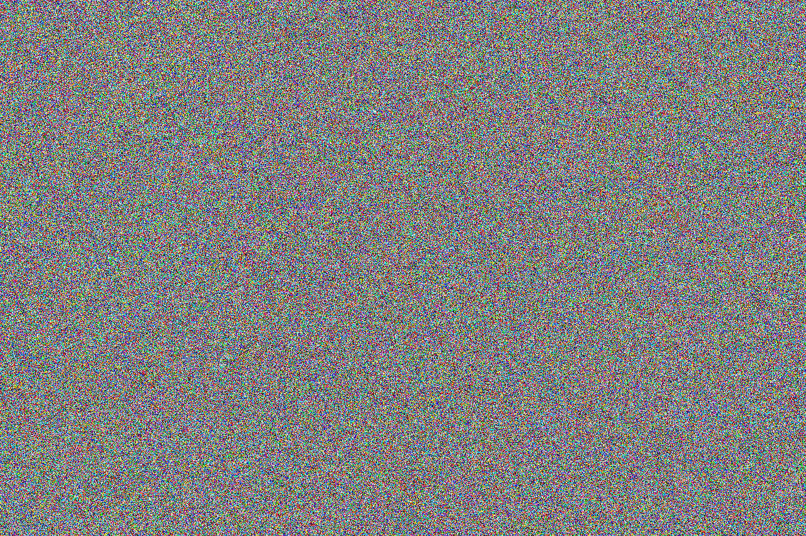
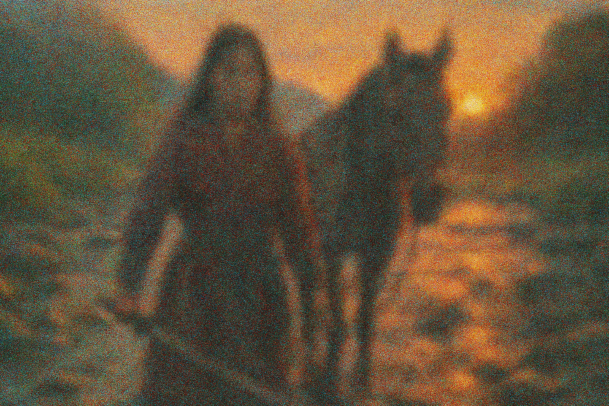
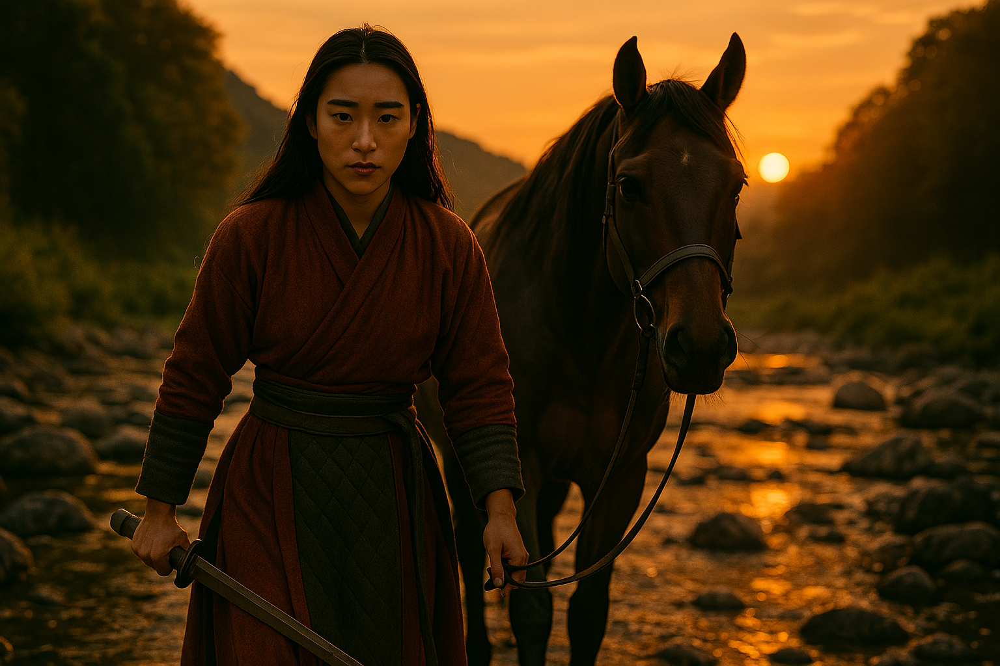
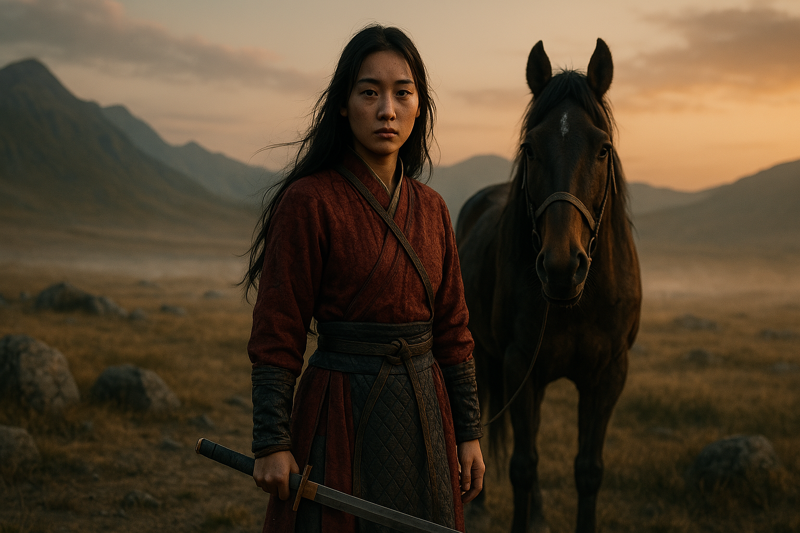
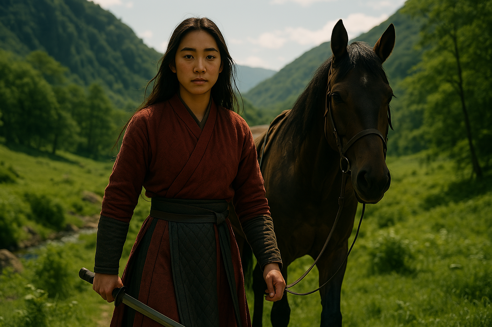
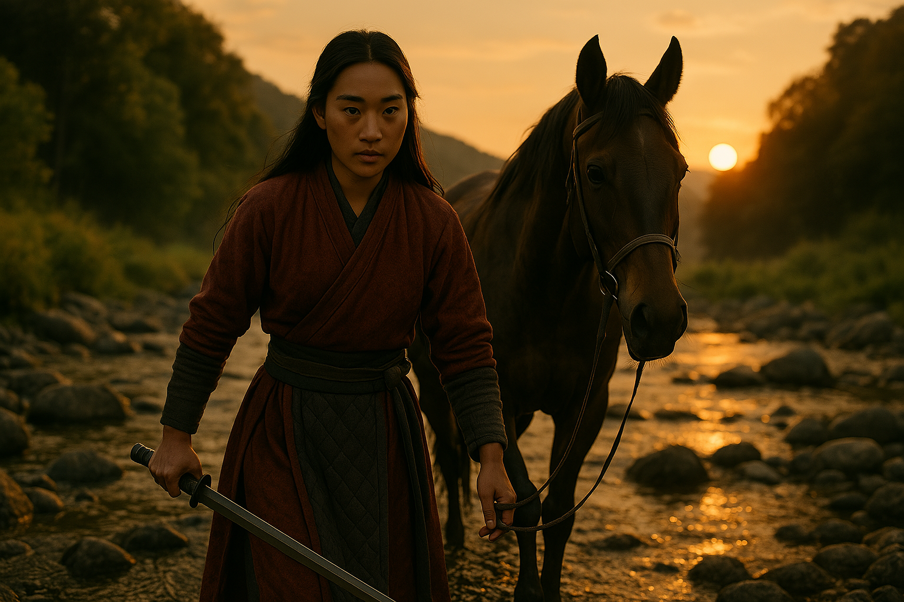

🧠 Introduction
Prompt engineering is part cinematography, part scripting, part design. This guide walks you through how to master cinematic AI prompts with consistency, detail, and visual storytelling.
🧩 The Structure of a Powerful Prompt
Subject:
"A female rose gold cyborg with glowing eyes"
Environment:
"On a battlefield at golden hour"
Explore the expanded vocabularies below for a richer prompting experience:
📸 Camera Framing Vocabulary
Shot Types:
- Extreme Close-Up (ECU)
- Close-Up (CU)
- Medium Close-Up (MCU)
- Medium Shot (MS)
- Cowboy Shot
- Medium Long Shot (MLS)
- Long Shot (LS) / Full Shot (FS)
- Extreme Long Shot (ELS)
- Establishing Shot
Camera Angles & Perspectives:
- Low-Angle Shot
- High-Angle Shot
- Eye-Level Shot
- Bird's-Eye View / Overhead Shot
- Worm's-Eye View
- Dutch Angle / Canted Angle
- Over-the-Shoulder Shot (OTS)
- Point of View (POV) Shot
Camera Movement & Focus:
- Dolly-in / Dolly-out
- Dolly Zoom / Vertigo Effect
- Pan (left/right)
- Tilt (up/down)
- Tracking Shot
- Crane Shot / Jib Shot
- Handheld Shot
- Static Shot
- Shallow Depth of Field
- Deep Depth of Field
- Bokeh Effect
- Sharp Focus / Pin Sharp
💡 Lighting Vocabulary
General & Directional:
- Cinematic Lighting
- Dramatic Lighting
- Soft Lighting
- Hard Lighting
- Natural Light
- Artificial Light
- Studio Lighting
- Backlighting
- Side Lighting
- Front Lighting
- Top-Down Lighting
- Rim Lighting
- Underlighting
Qualitative & Environmental:
- Volumetric Lighting / God Rays
- Golden Hour Light
- Blue Hour Light
- Twilight Light
- Moonlight
- Dappled Light
- Diffused Light
- Chiaroscuro
- High-Key Lighting
- Low-Key Lighting
- Spotlight
- Street Light
Specific & Color:
- Warm Lighting
- Cool Lighting
- Neon Lighting
- Fluorescent Lighting
- Candlelight
- Firelight
- Ambient Light
- Contre-jour
🎨 Style Vocabulary
Art Styles & Movements:
- Photorealistic / Hyper-detailed
- Realistic / Surreal / Abstract
- Impressionistic / Cubist
- Anime / Cartoon / Comic Book
- Pixel Art / Isometric
- Cyberpunk / Steampunk / Gothic
- Baroque / Rococo / Neoclassical
- Minimalist / Maximalist
- Film Noir / Pop Art
- Concept Art / Illustration / Sketch
- Watercolor / Oil Painting / Pastel
- Charcoal Drawing / Pen & Ink
Visual Quality & Effects:
- Ultra 4K / 8K / 16K
- Cinematic / Masterpiece / Award-winning
- Stunning / Beautiful / Epic
- Octane Render / Unreal Engine
- V-Ray / Redshift / ZBrush
- CGI / Digital Painting
- Volumetric Haze / Fog / Mist
- Dust / Rain / Snow
- Lens Flare / Chromatic Aberration
- Film Grain / Vintage / Distressed
- Glitch Art / Low Poly
Compositional & Aesthetic:
- Rule of Thirds
- Leading Lines
- Golden Ratio / Fibonacci Spiral
- Symmetrical / Asymmetrical
- Negative Space
- Focal Point
- Vibrant Colors / Muted Colors
- Monochromatic / Duotone
- Gritty / Clean
- Dreamlike / Nightmarish
Skin & Material Textures:
- Photorealistic skin, Hyperrealistic skin
- Cartoon skin, Anime skin, Comic book skin
- Porcelain skin, Doll-like skin
- Gritty skin, Weathered skin, Scarred skin
- Metallic skin, Translucent skin, Glossy skin
- Subsurface scattering (SSS)
- Pores, Wrinkles, Freckles, Blemishes
- Smooth, Silky, Rough, Dry, Oily
📐 Aspect Ratio Options
Common Ratios:
1:1(Square)4:3(Classic TV, some photography)3:2(Classic Photography)16:9(Modern TV, Video, Wide Photography)21:9(Ultrawide Monitor, CinemaScope)9:16(Vertical Video, Mobile Portrait)4:5(Vertical Photography, Instagram Portrait)
Cinematic & Other:
2.35:1(Anamorphic Film, Panavision)2.39:1(Widescreen Cinema)2.00:1(Univisium)1.85:1(Standard Widescreen Film)5:4(Large Format Photography)5:3(European Widescreen)
Usage Tip:
Always specify aspect ratio as --ar=WIDTH:HEIGHT in your prompt. Choosing the right aspect ratio greatly impacts the composition and feeling of your generated image.
👤 Character & Pose Details
Facial Expressions:
- Happy, Sad, Angry, Surprised
- Thoughtful, Determined, Worried
- Mischievous, Serene, Intense
- Smiling, Frowning, Crying, Laughing
Poses & Actions:
- Standing, Walking, Running, Jumping
- Sitting, Crouching, Kneeling
- Fighting, Meditating, Gazing
- Pointing, Holding [object]
- Dynamic pose, Static pose
- Action shot, Contemplative, Heroic, Defeated
Body Types & Features:
- Muscular, Slender, Curvy, Athletic
- Tall, Short, Elderly, Youthful
- Hair details (long, short, curly, straight, braided, color)
- Eye details (color, shape, glow)
📦 Object & Prop Details
General Qualities:
- Worn, New, Antique, Futuristic
- Rustic, Sleek, Ornate, Minimalist
- Glowing, Dull, Sharp, Blunt
- Fragile, Sturdy, Heavy, Light
Materials & Textures:
- Wooden, Stone, Metallic, Glass, Crystal
- Fabric (silk, denim, leather), Paper, Plastic
- Aged, Rusted, Polished, Matte, Shiny
- Rough, Smooth, Textured, Embossed
Animals:
- Fur texture (fluffy, sleek, coarse)
- Scales (smooth, rough, iridescent)
- Feathers (soft, ruffled, iridescent)
- Species-specific details (mane, antlers, claws, tusks)
- Majestic, Fierce, Playful, Gentle, Wild, Domesticated
☁️ Atmospheric & Environmental Details
Weather & Phenomena:
- Rainy, Stormy, Foggy, Sunny, Cloudy, Snowy
- Misty, Windy, Calm, Thunderstorm, Blizzard
- Aurora Borealis, Starry Sky, Eclipse, Rainbow
Time of Day & Lighting:
- Golden Hour, Blue Hour, Twilight
- Sunrise, Sunset, Midday, Midnight
- Dawn, Dusk
- Moonlight, Starlight
General Ambiance & Elements:
- Ethereal, Eerie, Vibrant, Somber, Peaceful
- Chaotic, Mysterious, Oppressive, Serene, Bustling
- Volumetric dust, Falling embers, Swirling leaves
- Light rays, Shimmering water, Reflections
- Overgrown, Lush, Arid, Barren
🧬 Consistency Across Scenes
-
✓ Set a static
seedfor all related scenes - ✓ Repeat key descriptions (e.g., "rose gold armor, cracked visor")
- ✓ Use ControlNet or Image-to-Image for pose retention
📋 Prompt Template
Cinematic 4K ultra-realistic image of [Subject],
in a [Lighting Type] setting during [Time of Day],
captured in a [Camera Shot Type] with [Lens Detail],
[Environment Description],
featuring [Visual Effect or Motion],
photorealistic textures, volumetric lighting, [Mood Descriptor],
--seed=12345 --cfg=9 --ar=16:9
E.G.
Cinematic 4K ultra-realistic image of a female rose gold cyborg with glowing blue eyes,
in backlit golden hour light during sunset,
captured in a dolly-in low-angle close-up with lens flare and shallow depth of field,
on a stormy mountain ridge,
featuring dust particles and falling embers,
photorealistic textures, volumetric haze, dramatic mood,
--seed=90210 --cfg=10 --ar=16:9
🧠 AI as a Visual Compiler
The process is similar to programming. The prompt becomes "tokenized," embedded in latent space, and decoded into high-resolution pixels using a diffusion process—turning language into light, shape, and detail.
⚡ Understanding Noise: The Journey to Image Creation
AI image generation, especially with diffusion models, starts from a canvas of pure random "noise" (like TV static). The model then iteratively "denoises" this static, guided by your prompt, gradually transforming the random pixels into a coherent and detailed image.
Below is a conceptual progression illustrating how an image might evolve from initial noise to a final clear image during the denoising process.
1. Initial Noise
Pure static with vague color fields; the subject is indistinguishable.

2. Intermediate Denoising
Shapes and colors begin to form, hinting at the subject, but still very blurry.

3. Final Image
The image is fully rendered with crisp details and adherence to the prompt.

🏁 Bonus Exercises
Practice these exercises to hone your prompt engineering skills!
Practice with Free Image Generators!
To further your prompt engineering skills, explore various free-to-use or open-source AI image generation platforms available online. These platforms often provide a "free forever" tier or community access that allows you to experiment with different models and parameters. Search for terms like "free AI art generator" or "open-source image synthesis" to find platforms like Leonardo.AI or DALL-E (check their free tiers). Keep in mind that results may vary from the images generated directly in this guide.
Understanding Locked Seeds: For generating consistent sequential scenes, using a "locked seed" (e.g., --seed=90210) is crucial. This fixed number ensures the initial noise pattern remains the same across different prompts, helping to maintain visual consistency and create a cohesive narrative flow, similar to an "AI trailer."
1. Different Lighting Styles (Dawn)
Example Prompt: Cinematic 4K ultra-realistic image of a Mulan-inspired young woman with long dark hair, wearing traditional warrior attire with subtle intricate patterns, armed with a sword, her face clearly visible and determined, standing resolutely on a vast, windswept tundra of the Mongolian Mountain Range with a majestic horse by her side. The scene is bathed in the soft, ethereal light of dawn, with a golden-orange glow on the horizon, volumetric mist rising from the cold ground, and a few scattered, ancient rocks. Captured in a wide shot with a shallow depth of field, photorealistic textures, dramatic mood. --seed=90210 --cfg=9 --ar=16:9

2. Repeat with CFG 5 (Midday)
Example Prompt: Cinematic 4K ultra-realistic image of a Mulan-inspired young woman... her face clearly visible, traveling through a lush, green valley... with a sturdy horse companion... The midday sun casts dappled light... --seed=90210 --cfg=5

3. AI Trailer Scene (Sunset River Crossing)
Example Prompt: Cinematic 4K ultra-realistic image of a Mulan-inspired young woman... her face clearly visible and focused, carefully crossing a shallow, rocky river... a loyal horse accompanying her... The sun is setting... --seed=90210 --cfg=10 --ar=16:9
